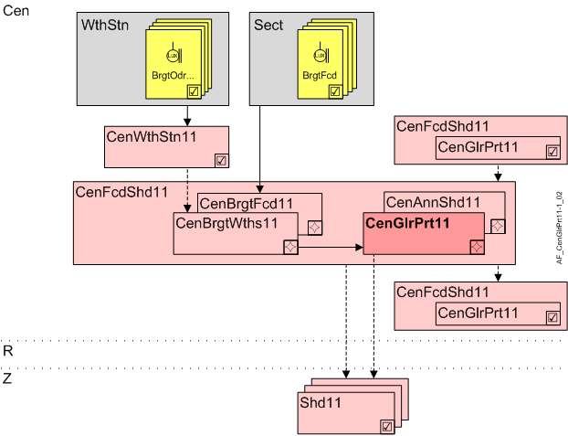

Central glare protection (CenGlrPrt11)
Overview
The application function "Central anti-glare protection 11" (CenGlrPrt11) calculates the anti-glare protection state using threshold values and time delays, and distributes them to subordinate AFs CenGlrPrt11 or directly to the connected shading functions.
Note: Local anti-glare protection is active if one room is occupied (default value in RShdCoo11 for room operating mode Comfort and Pre-Comfort).

Cen | Central functions |
CenFcdShd11 | Central facade shading for automatic 11 |
CenBrgtWths11 | Central brightness from weather station 11 |
CenBrgtFcd11 | Central brightness on facade 11 |
CenGlrPrt11 | Central anti-glare protection 11 |
CenAnnShd11 | Central annual shading 11 |
R | Room |
Z | Shading zone in room segment |
Shd11 | Shading 11, for shading and daylight use with venetian blinds or awnings, group member in a facade sector |
Function
The input is the effective brightness (BrgtEff) from CenBrgtWths11 or CenBrgtFcd11.
The AF calculates the anti-glare protection state forwarded via internal connection. It can accept the following value:
- High
If the sun reaches the facade and the brightness is greater than BrgtLmOn, or if the sun does not reach the facade and brightness is greater than BrgtIdirLmOn for longer than DlyOnBrgt.
Shading moves to the locally configured "High" position (default value: Close and position slats against the sun). - Hold
If the sun reaches the facade and the brightness is less than BrgtLmOff, or if the sun does not reach the facade and is brightness is less BrgtIdirLmOff for longer than DlyOnBrgt.
Shading goes to the locally configured "Hold" position (default: Hold height and open slats). - None
If the sun reaches the facade and the brightness is less than BrgtLmOff, or if the sun does not reach the facade and is brightness is less BrgtIdirLmOff for longer than 4 * DlyOffBrgt.
Shading goes to the locally configured "None" position (default value: Move up). - Dark
If brightness is less than BrgtDarkLmOn for longer than DlyOnBrgt. Dark is reset to None, if brightness is greater than BrgtDarkLmOff for longer than DlyOnBrgt.
Shd11 does not use them, but it is available for customized functional extensions.
The delay (DlyOnBrgt) prevents movements that are too frequent.
The reaction time can be extended on a sliding scale (as a type of integral function) if multiple quick changes occur. Parameters LgtSnsDlyMax and LgtSnsDlyMin are used to this end.
Hierarchical grouping
This AF supports hierarchical grouping. For detailed information, see Hierarchical grouping.
Interface to local and superordinate functions
Description | Object | Type | Source | Evaluation upon hierarchical grouping |
|---|---|---|---|---|
Glare condition value | GlrCndVal | MCalcVal | From optional, superordinate AF CenGlrPrt11 | Superordinate AF wins, its values are used |
Anti-glare protection condition value | GlrPrtCndVal | MCalcVal |
Configuration
 objects
objects
Description | Object | Type | Default value |
|---|---|---|---|
Brightness switch-on limit 10...150000 [lx] | BrgtLmOn | ACnfVal | 8000 [lx] |
Brightness switch-off limit 10...150000 [lx] | BrgtLmOff | ACnfVal | 6000 [lx] |
Indirect brightness switch-on limit 10...150000 [lx] | BrgtIdirLmOn | ACnfVal | 25000 [lx] |
Indirect brightness switch-off limit 10...150000 [lx] | BrgtIdirLmOff | ACnfVal | 20000 [lx] |
Darkness switch-off limit 10...150000 [lx] | BrgtDarkLmOff | ACnfVal | 500 [lx] |
Darkness switch-on limit 10...150000 [lx] | BrgtDarkLmOn | ACnfVal | 300 [lx] |
 Parameter
Parameter
Description | Parameter | Default value |
|---|---|---|
Switch-on delay brightness 0...1800 [s] | DlyOnBrgt | 60 [s] |
Maximum light sensitivity delay 0...120 [min] | LgtSnsDlyMax | 60 [min] |
Minimum light sensitivity delay 0...120 [min] | LgtSnsDlyMin | 15 [min] |
Interface
Interface | Description | Type | Ref. | Owner |
|---|---|---|---|---|
BrgtEff | Effective brightness | ACalcVal | ● | - |
GlrCndVal | Glare condition value 1:None | MCalcVal | ● | - |
GlrPrtCndVal | Anti-glare protection condition value 1:None | MCalcVal | ● | - |
CenFcdMst | Manager for central facade function for automatic | GrpMaster | ◉ | Central function / Device |
BrgtLmOn | Brightness switch-on limit | ACnfVal | ● | - |
BrgtLmOff | Brightness switch-off limit | ACnfVal | ● | - |
BrgtIdirLmOn | Indirect brightness switch-on limit | ACnfVal | ● | - |
BrgtIdirLmOff | Indirect brightness switch-off limit | ACnfVal | ● | - |
BrgtDarkLmOff | Darkness switch-off limit | ACnfVal | ● | - |
BrgtDarkLmOn | Darkness switch-on limit | ACnfVal | ● | - |